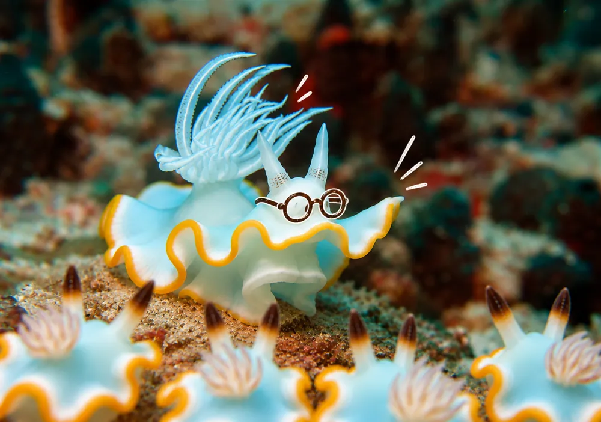
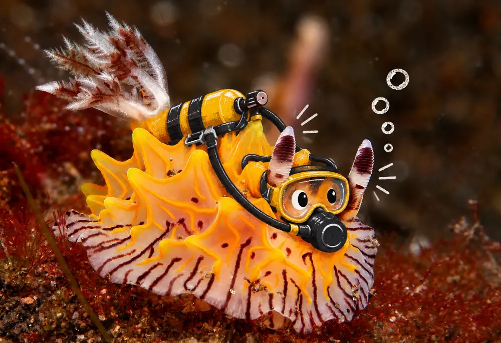
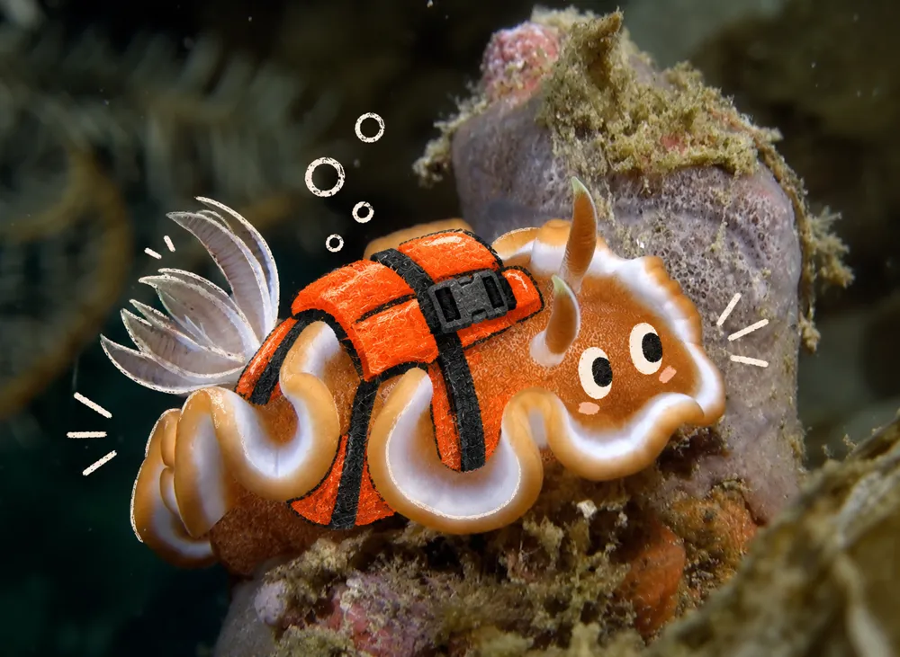
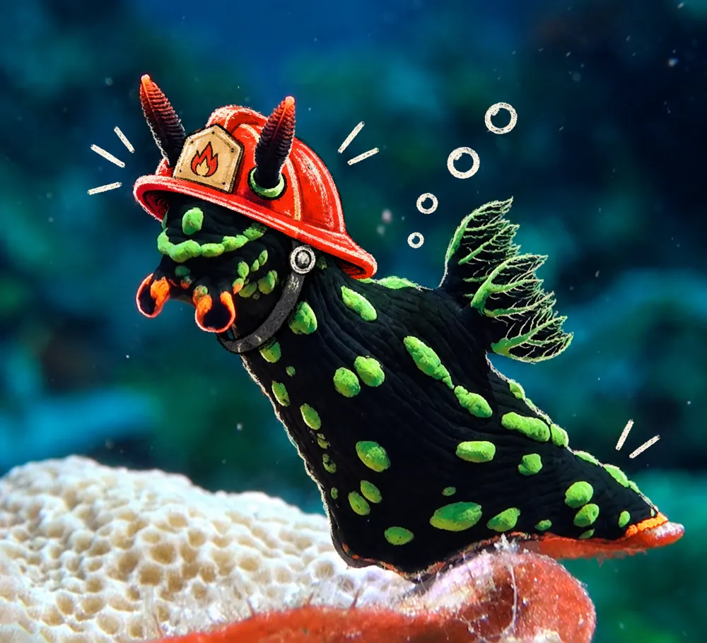
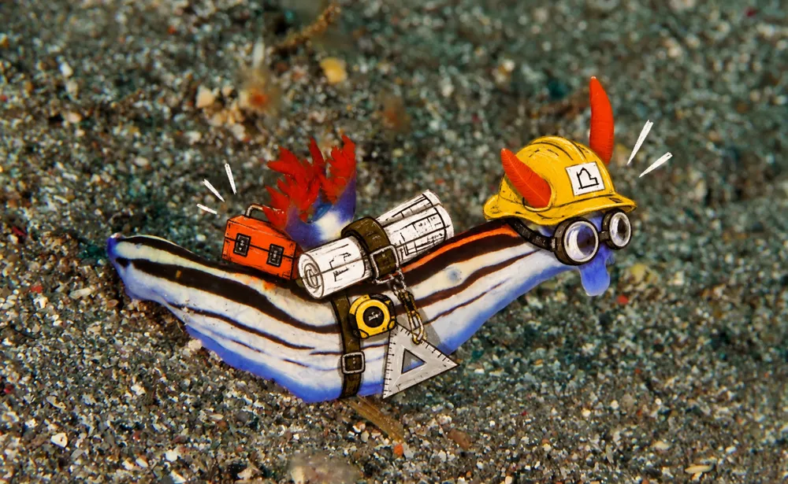
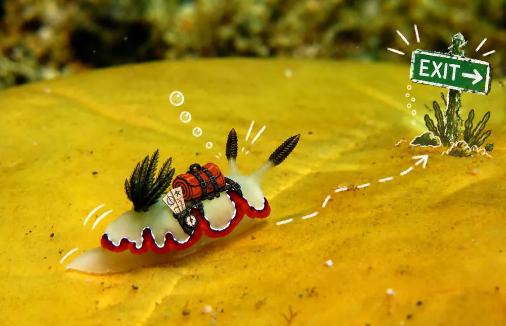

Safety
Go remote. Stay ready.
Some of the places WAOW 2 explores are far from shore.
That freedom comes with responsibility.
From the crew and dive procedures to navigation, medical
equipment and the design of the boat itself, safety is built into
every part of the journey.

Trained for it
All crew are BST and firefighting trained, and practise
regularly. Dive crew and cruise directors also hold
first aid and emergency oxygen. The captain and
engineers are licensed for the vessel's size and power.
Every trip opens with a briefing and muster drill.

In the water
Four guests per guide, free Nitrox, conservative dive
practices. Every diver carries a beacon, SMB, whistle
and computer. Tenders stay manned, following the
group's bubbles until the last diver is aboard.

Twice what we need
A life vest for every guest and every crew member,
and the same number again in storage. Life rafts
for twice the people on board, serviced annually.
Lifebuoys with self-igniting lights throughout.
Always a way to call
VHF, SSB, satellite phone, satellite internet,
EPIRBs, flares. Every way of calling has a backup.
Navigation and watch
Radar, AIS, GPS and thermal night vision, backed
by paper charts and a magnetic compass that
needs no power. Watch kept around the clock.
Fire, prevented first
An induction galley instead of gas. Marine cables and
RCBOs throughout. Batteries charge in the camera room,
which has its own fire detection.
Fire, found early
Heat, smoke and CO detectors feed central alarms. Fire
pumps, extinguishers and breathing apparatus
throughout the boat.
Engine room
Fire insulated. Fixed gas suppression, and remote
shutdowns for the engines, the fuel and the air supply.

Hull, stability and flooding
Caulked bulkheads with watertight doors for slow flooding
between sections. Stability confirmed by an inclining test.
Redundant bilge pumps and high-water alarms throughout.

Power, propulsion
and steering
Three gensets above the waterline, a solar-charged emergency
battery bank,
a secondary engine on its own shaft, and three stages of steering,
manual backup included.
Checked by people
who are not us
ISM Document of Compliance, regular independent surveys,
full compliance with Indonesian maritime regulations
and insurer requirements.
The way out
An alarm with call points throughout,
marked exits, two escape routes from
every lower-deck cabin, emergency
breathing devices and lighting.
